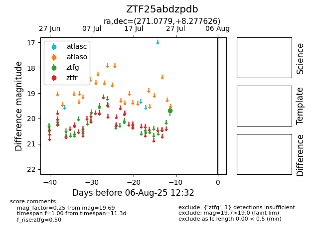

Target ZTF25abdzpdb at 2025-08-06 17:07, see:
FINK: fink-portal.org/ZTF25abdzpdb
Lasair: lasair-ztf.lsst.ac.uk/objects/ZTF25abdzpdb
ALeRCE: alerce.online/object/ZTF25abdzpdb
alt names
ZTF25abdzpdb (ztf,fink)
coordinates:
equatorial (ra, dec) = (271.0779,+8.27763)
galactic (l, b) = (35.0600,+14.20984)
photometry
last ztfg=19.69
1 ztfg detections
